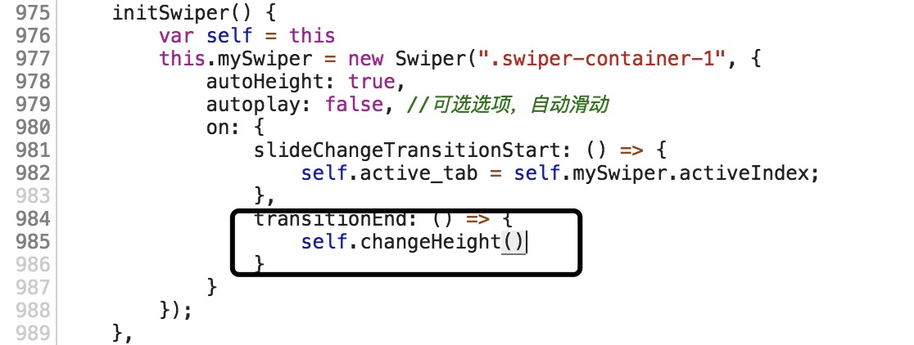
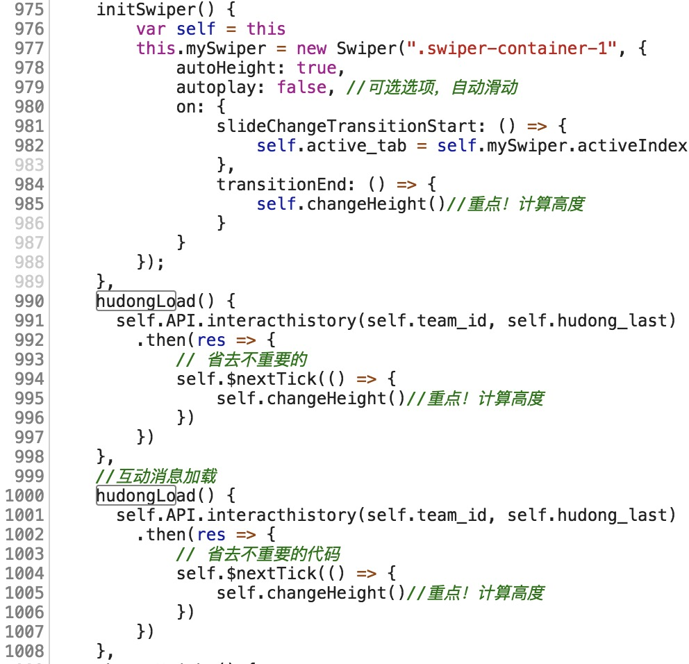

前几天做公司项目新需求，需要tab左右切换，就用到了swiper，结果踩到了坑，下面来讲讲是什么坑。
事情是这样的，两个tab（如下图）：

两个tab下面的内容是滚动分页加载的，左边加载了内容之后滑到右边，发现右边的tab下会多出来一片空白：
研究一下发现是，左边加载的内容多了，把外层swiper-container的高度撑开了。滑到右边后，swiper-container的高度还是左边的高度，但右边的内容少，也就多出来一些空白区了。随即上网查了下，发现swpier有个autoHeight的属性，该属性设置为true的时候，可以自动设置高度。官方解释及示例
于是赶紧加上该属性，这下该可以了吧！
当然，并没有！
难道我们的代码引入的swiper的版本不支持该属性？一看，引入的是4.x.x的版本，支持的呀！
难道官方的swiper.js有bug？不太可能吧！于是继续在网上搜索，发现有人讲到autoHeight这个属性有坑，但讲得不详细。刚好到了下班的时候了，思绪又有些混乱，就想着冷静冷静，第二天再看！
话说过了一晚，大脑清醒很多，接着研究。。。
仔细看了切换之后，swiper-container的高度。发现第一屏加载好后（此时，左边的高度是1203px，右边的高度是1080，注意此时没有滚动加载，两边都只加载了十条数据），切换的时候它的确实高度会随着切换而变化。
但是，左右两边如果滚动加载了更多的数据，切换的时候swiper-container的高度仍然是1203px或者1080px，也就是，第一屏加载好后，swiper就记下来两边的高度，然后切换的时候更改swiper-container的高度，这就是autoHeight的功能。但是，我加载了数据，高度增加了，而swiper还是用着开始记下的高度。
此时又网上查了下要怎么解决，发现人讲，需要自己获取内容的高度，然后将得到的高度赋值给swiper-container，于是试了下。在transitionEnd该事件的回调中重新计算高度（如下图：）。这下，切换的时候高度终于对了。
但是，还有个问题：
假如我现在就在左边的tab，我不切换，然后加载数据，swiper-container的高度又不对了，这样就应该在我加载完数据之后再次计算下高度。到此时，终于可以了。
最终代码如下（当然精简过的啦！）：
什么？你问我，changeHeight是什么样的？当然是计算高度，然后是赋值给swiper-container，这个你就自己实现啦！